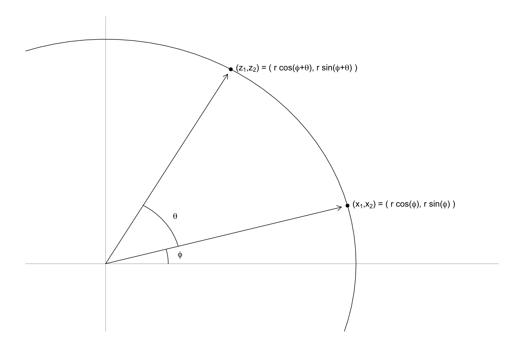
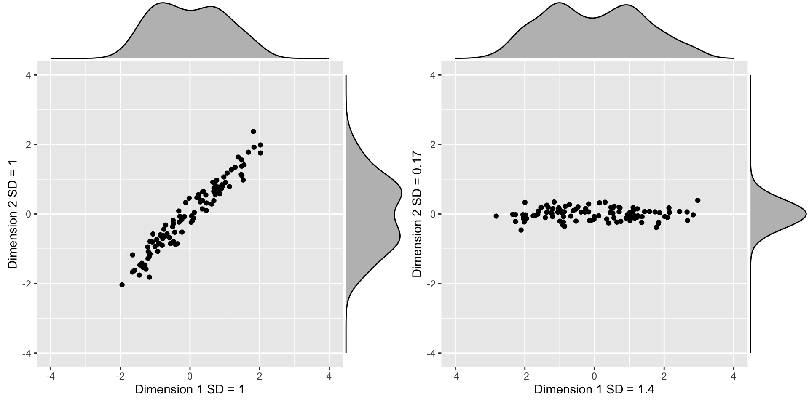
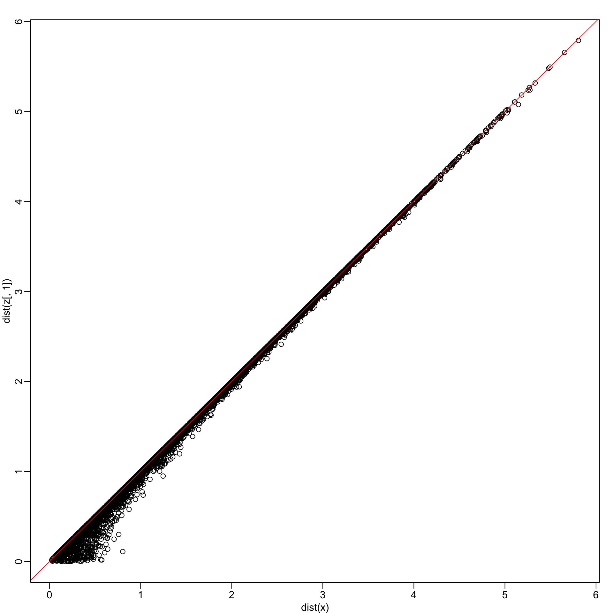
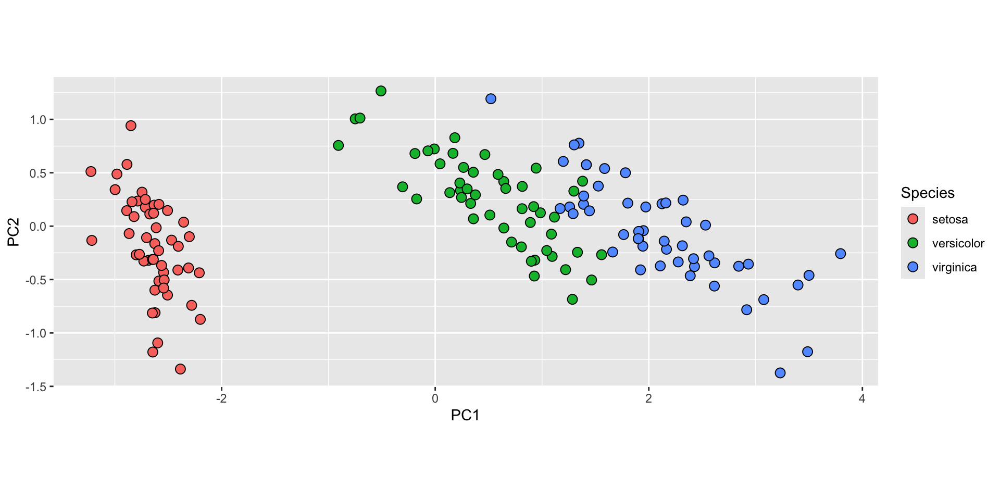
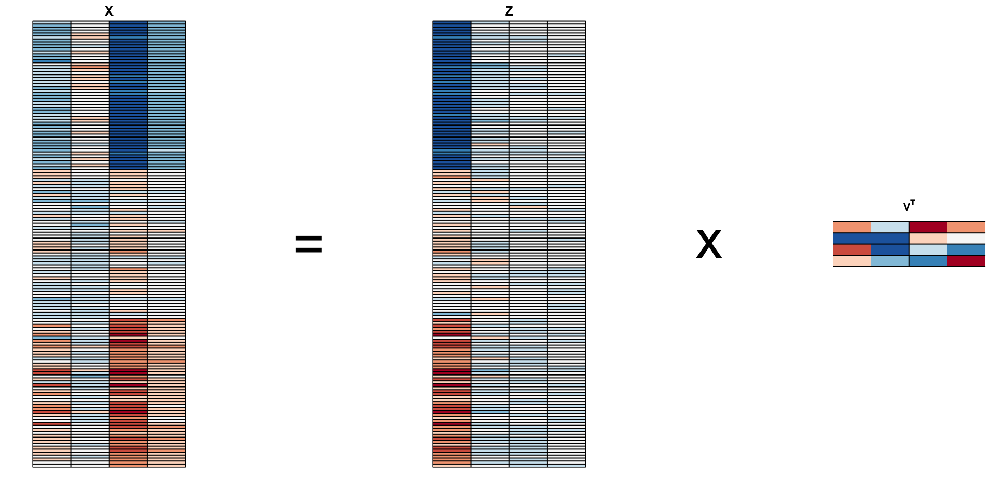
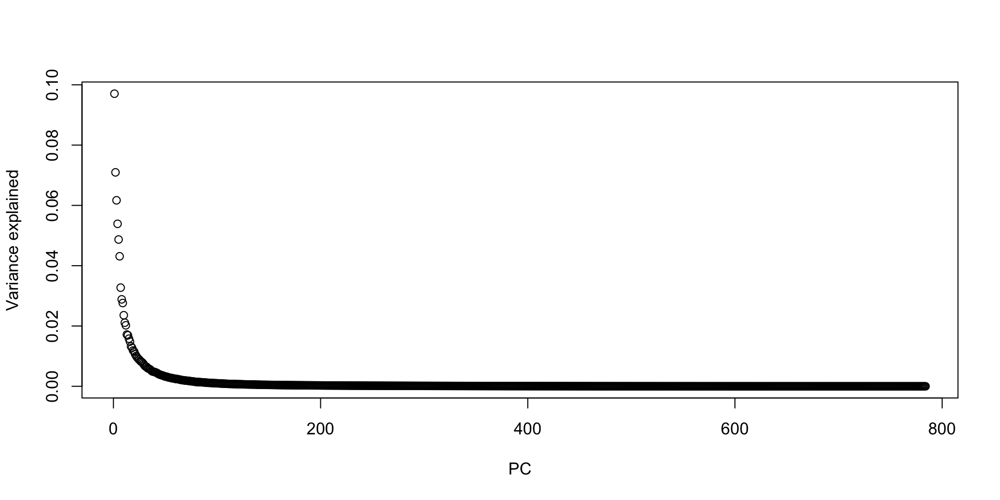
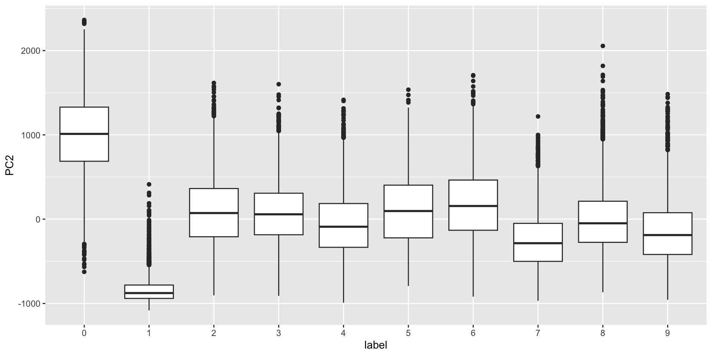
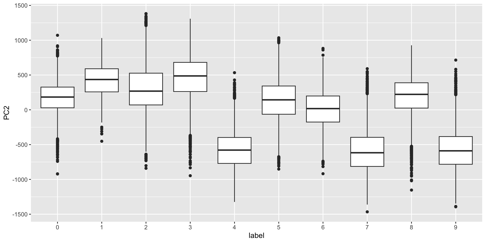
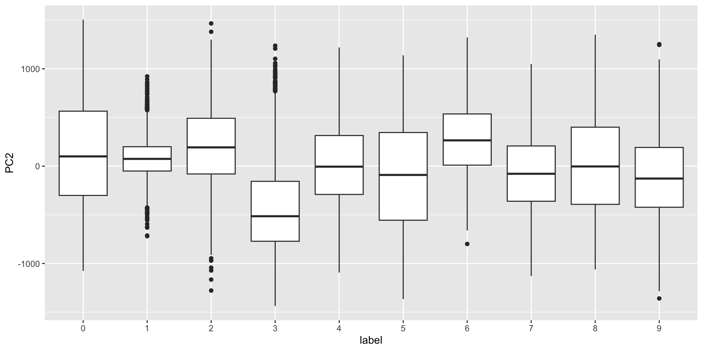
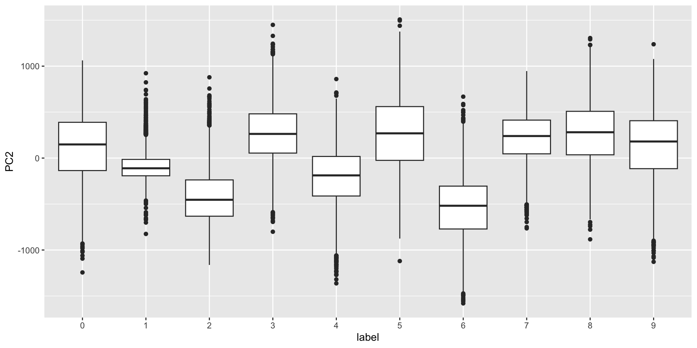

Dimension Reduction
2024-11-12
Dimension reduction
A typical machine learning task involves working with a large number of predictors which can make data analysis challenging.
For example, to compare each of the 784 features in our predicting digits example, we would have to create 306,936 scatterplots.
Creating one single scatterplot of the data is impossible due to the high dimensionality.
Dimension reduction
The general idea of dimension reduction is to reduce the dimension of the dataset while preserving important characteristics, such as the distance between features or observations.
With fewer dimensions, data analysis becomes more feasible.
The general technique behind it all, the singular value decomposition, is also useful in other contexts.
We will describe Principal Component Analysis (PCA).
Motivation: preserving distance
We consider an example with twin heights.
Some pairs are adults, the others are children.
Here we simulate 100 two-dimensional points that represent the number of standard deviations each individual is from the mean height.
Each point is a pair of twins.
Motivation: preserving distance
- We see correlation is high and two clusters of twins:
Motivation: preserving distance
Our features are \(n\) two-dimensional points.
We will pretend that visualizing two dimensions is too challenging and want to explore the data through one histogram.
We want to reduce the dimensions from two to one, but still be able to understand important characteristics of the data.
Motivation: preserving distance
- Start by standardizing data
Motivation: preserving distance
- We highlight the distance between observation 1 and 2 (blue), and observation 1 and 51 (red).

Motivation: preserving distance
- We can compute these distances using
dist:
Note that the blue line is shorter.
We want our one dimension summary to approximate these distances.
Motivation: preserving distance
Note the blue and red line are almost diagonal.
An intuition is that most the information about distance is in that direction.
We can rotate the points in a way that preserve the distance between points, while increasing the variability in one dimension and reducing it on the other.
Using this method, we keep more of the information about distances in the first dimension.
Rotations
- We saw that any point \((x_1, x_2)^\top\) can be written as the base and height of a triangle with a hypotenuse going from \((0,0)^\top\) to \((x_1, x_2)^\top\):
\[ x_1 = r \cos\phi, \,\, x_2 = r \sin\phi \]
- with \(r\) the length of the hypotenuse and \(\phi\) the angle between the hypotenuse and the x-axis.
Rotations
- To rotate the point \((x_1, x_2)^\top\) around a circle with center \((0,0)^\top\) and radius \(r\) by an angle \(\theta\) we change the angle to \(\phi + \theta\):
\[ z_1 = r \cos(\phi+ \theta), \,\, z_2 = r \sin(\phi + \theta) \]
Rotations
Rotations
- We can use trigonometric identities to rewrite \((z_1, z_2)\):
\[ \begin{aligned} z_1 &= r \cos(\phi + \theta)\\ &= r \cos \phi \cos\theta - r \sin\phi \sin\theta\\ &= x_1 \cos(\theta) - x_2 \sin(\theta)\\ z_2 &= r \sin(\phi + \theta)\\ &= r \cos\phi \sin\theta + r \sin\phi \cos\theta\\ &= x_1 \sin(\theta) + x_2 \cos(\theta) \end{aligned} \]
Rotations
- Here we rotate all points by a \(-45\) degrees:
Rotations
The variability of \(x_1\) and \(x_2\) are similar.
The variability of \(z_1\) is larger than that of \(z_2\).
The distances between points appear to be preserved.
We soon show, mathematically, that distance is preserved.
Linear transformations
- Any time a matrix \(\mathbf{X}\) is multiplied by another matrix \(\mathbf{A}\), we refer to the product
\[\mathbf{Z} = \mathbf{X}\mathbf{A}\]
as a linear transformation of \(\mathbf{X}\).
- We can show that the previously shown rotation is a linear transformation.
Linear transformations
- To see this, note that for any row \(i\), the first entry was:
\[ z_{i,1} = a_{1,1} x_{i,1} + a_{2,1} x_{i,2} \]
- with \(a_{1,1} = \cos\theta\) and \(a_{2,1} = -\sin\theta\).
Linear transformations
- The second entry was also a linear transformation:
\[z_{i,2} = a_{1,2} x_{i,1} + a_{2,2} x_{i,2}\]
- with \(a_{1,2} = \sin\theta\) and \(a_{2,2} = \cos\theta\).
Linear transformations
- We can therefore write these trasformation using the folowing matrix notation:
\[ \begin{pmatrix} z_1\\z_2 \end{pmatrix} = \begin{pmatrix} a_{1,1}&a_{1,2}\\ a_{2,1}&a_{2,2} \end{pmatrix}^\top \begin{pmatrix} x_1\\x_2 \end{pmatrix} \]
Linear transformations
- An advantage of using linear algebra is that we can write the transformation for the entire dataset by saving all observations in a \(N \times 2\) matrix:
\[ \mathbf{X} \equiv \begin{bmatrix} \mathbf{x_1}^\top\\ \vdots\\ \mathbf{x_n}^\top \end{bmatrix} = \begin{bmatrix} x_{1,1}&x_{1,2}\\ \vdots&\vdots\\ x_{n,1}&x_{n,2} \end{bmatrix} \]
Linear transformations
- We can then obtain the rotated values \(\mathbf{z}_i\) for each row \(i\) by applying a linear transformation of \(X\):
\[ \mathbf{Z} = \mathbf{X} \mathbf{A} \mbox{ with } \mathbf{A} = \, \begin{pmatrix} a_{1,1}&a_{1,2}\\ a_{2,1}&a_{2,2} \end{pmatrix} = \begin{pmatrix} \cos \theta&\sin \theta\\ -\sin \theta&\cos \theta \end{pmatrix} . \]
- The columns of \(\mathbf{A}\) are referred to as directions because if we draw a vector from \((0,0)\) to \((a_{1,j}, a_{2,j})\), it points in the direction of the line that will become the \(j-th\) dimension.
Linear transformations
- If we define:
- We can write code implementing a rotation by any angle \(\theta\) using linear algebra:
Linear transformations
- Another advantage of linear algebra we can convert \(\mathbf{Z}\) back to \(\mathbf{X}\) by multiplying by the inverse $^{-1}.
\[ \mathbf{Z} \mathbf{A}^\top = \mathbf{X} \mathbf{A}\mathbf{A}^\top\ = \mathbf{X} \]
Linear transformations
- In this particular case, we can use trigonometry to show that:
\[ x_{i,1} = b_{1,1} z_{i,1} + b_{2,1} z_{i,2}\\ x_{i,2} = b_{1,2} z_{i,1} + b_{2,2} z_{i,2} \]
- with \(b_{2,1} = \cos\theta\), \(b_{2,1} = \sin\theta\), \(b_{1,2} = -\sin\theta\), and \(b_{2,2} = \cos\theta\).
Linear transformations
- This implies that:
\[ \mathbf{X} = \mathbf{Z} \begin{pmatrix} \cos \theta&-\sin \theta\\ \sin \theta&\cos \theta \end{pmatrix} \]
- This implies that all the information in \(\mathbf{X}\) is included in the rotation \(\mathbf{Z}\).
Linear transformations
- Note that in this case
\[ \begin{pmatrix} \cos \theta&-\sin \theta\\ \sin \theta&\cos \theta \end{pmatrix} = \mathbf{A}^\top \]
which implies
\[ \mathbf{Z} \mathbf{A}^\top = \mathbf{X} \mathbf{A}\mathbf{A}^\top\ = \mathbf{X} \]
and therefore that \(\mathbf{A}^\top\) is the inverse of \(\mathbf{A}\).
Note
Remember that we represent the rows of a matrix as column vectors.
This explains why we use \(\mathbf{A}\) when showing the multiplication for the matrix \(\mathbf{Z}=\mathbf{X}\mathbf{A}\), but transpose the operation when showing the transformation for just one observation: \(\mathbf{z}_i = \mathbf{A}^\top\mathbf{x}_i\).
Linear transformations
- To see that distance is preserved note that the distance between two points \(\mathbf{z}_h\) and \(\mathbf{z}_i\) is
\[ \begin{aligned} ||\mathbf{z}_h - \mathbf{z}_i|| &= ||\mathbf{A} \mathbf{x}_h - \mathbf{A} \mathbf{x}_i|| \\ &= || \mathbf{A} (\mathbf{x}_h - \mathbf{x}_i) || \\ &= (\mathbf{x}_h - \mathbf{x}_i)^{\top} \mathbf{A}^{\top} \mathbf{A} (\mathbf{x}_h - \mathbf{x}_i) \\ &=(\mathbf{x}_h - \mathbf{x}_i)^{\top} (\mathbf{x}_h - \mathbf{x}_i) \\ &= || \mathbf{x}_h - \mathbf{x}_i|| \end{aligned} \]
Linear transformations
- Here is an example for a 30 degree rotation, although it works for any angle:
- Using linear algebra, we can rewrite the quantity above as:
Orthogonal transformations
We refer to transformation with the property \(\mathbf{A} \mathbf{A}^\top = \mathbf{I}\) as orthogonal transformations.
These are guaranteed to preserve the distance between any two points.
We previously demonstrated our rotation has this property.
We can confirm using R:
Orthogonal transformations
- \(\mathbf{A}\) being orthogonal also guarantees that the total sum of squares (TSS) of \(\mathbf{X}\), defined as \(\sum_{i=1}^n \sum_{j=1}^p x_{i,j}^2\) is equal to the total sum of squares of the rotation \(\mathbf{Z} = \mathbf{X}\mathbf{A}^\top\).
\[ \sum_{1=1}^n ||\mathbf{z}_i||^2 = \sum_{i=1}^n ||\mathbf{A}^\top\mathbf{x}_i||^2 = \sum_{i=1}^n \mathbf{x}_i^\top \mathbf{A}\mathbf{A}^\top \mathbf{x}_i = \sum_{i=1}^n \mathbf{x}_i^\top\mathbf{x}_i = \sum_{i=1}^n||\mathbf{x}_i||^2 \]
Orthogonal transformations
- We can confirm using R:
Orthogonal transformations
This can be interpreted as a consequence of the fact that an orthogonal transformation guarantees that all the information is preserved.
However, although the total is preserved, the sum of squares for the individual columns changes.
Transformations
- Here we compute the proportion of TSS attributed to each column, referred to as the variance explained or variance captured by each column, for \(\mathbf{X}\):
- and \(\mathbf{Z}\):
- We now explain how useful this property can be.
Principal Component Analysis
We have established that orthogonal transformations preserve the distance between observations and the total sum of squares.
We have also established that, while the TSS remains the same, the way this total is distributed across the columns can change.
The general idea behind Principal Component Analysis (PCA) is to try to find orthogonal transformations that concentrate the variance explained in the first few columns.
We can then focus on these few columns, effectively reducing the dimension of the problem.
Principal Component Analysis
- In our specific example, we are looking for the rotation that maximizes the variance explained in the first column:
Principal Component Analysis
We find that a -45 degree rotation appears to achieve the maximum, with over 98% of the total variability explained by the first dimension.
We denote this rotation matrix with \(\mathbf{V}\):
Principal Component Analysis
- We can rotate the entire dataset using:
\[ \mathbf{Z} = \mathbf{X}\mathbf{V} \]
- In R:
Principal Component Analysis

Principal Component Analysis
Principal Component Analysis
The first dimension of
zis referred to as the first principal component (PC).Because almost all the variation is explained by this first PC, the distance between rows in
xcan be very well approximated by the distance calculated with justz[,1].
Principal Component Analysis
Principal Component Analysis
- The two groups can be clearly observed with the one dimension:
- Better than with any of the two original dimensions.
Principal Component Analysis
- We can visualize these to see how the first component summarizes the data:
Principal Component Analysis
This idea generalizes to dimensions higher than 2.
As done in our two dimensional example, we start by finding the \(p \times 1\) vector \(\mathbf{v}_1\) with \(||\mathbf{v}_1||=1\) that maximizes \(||\mathbf{X} \mathbf{v}_1||\).
The projection \(\mathbf{X} \mathbf{v}_1\) is the first PC.
Principal Component Analysis
- To find the second PC, we subtract the variation explained by first PC from \(\mathbf{X}\):
\[ \mathbf{r} = \mathbf{X} - \mathbf{X} \mathbf{v}_1 \mathbf{v}_1^\top \]
and then find the vector \(\mathbf{v}_2\) with\(||\mathbf{v}_2||=1\) that maximizes \(||\mathbf{r} \mathbf{v}_2||\).
The projection \(\mathbf{X} \mathbf{v}_2\) is the second PC.
Principal Component Analysis
- We then subtract the variation explained by the first two PCs, and continue this process until we have the entire rotation matrix and matrix of principal components, respectively:
\[ \mathbf{V} = \begin{bmatrix} \mathbf{v}_1&\dots&\mathbf{v}_p \end{bmatrix}, \mathbf{Z} = \mathbf{X}\mathbf{V} \]
- The ideas of distance preservation extends to higher dimensions.
Principal Component Analysis
For a multidimensional matrix with \(p\) columns, we can find an orthogonal transformation \(\mathbf{A}\) that preserves the distance between rows, but with the variance explained by the columns in decreasing order.
If the variances of the columns \(\mathbf{Z}_j\), \(j>k\) are very small, these dimensions have little to contribute to the distance calculation and we can approximate the distance between any two points with just \(k\) dimensions.
If \(k\) is much smaller than \(p\), then we can achieve a very efficient summary of our data.
Warning
Notice that the solution to this maximization problem is not unique because \(||\mathbf{X} \mathbf{v}|| = ||-\mathbf{X} \mathbf{v}||\).
Also, note that if we multiply a column of \(\mathbf{A}\) by \(-1\), we still represent \(\mathbf{X}\) as \(\mathbf{Z}\mathbf{V}^\top\) as long as we also multiple the corresponding column of \(\mathbf{V}\) by -1.
This implies that we can arbitrarily change the sign of each column of the rotation \(\mathbf{V}\) and principal component matrix \(\mathbf{Z}\).
Principal Component Analysis
- In R, we can find the principal components of any matrix with the function
prcomp:
- The default behavior is to center the columns of
xbefore computing the PCs, an operation we don’t currently need because our matrix is scaled.
Principal Component Analysis
The object
pcaincludes the rotated data \(Z\) inpca$xand the rotation \(\mathbf{V}\) inpca$rotation.We can see that columns of the
pca$rotationare indeed the rotation obtained with -45 (remember the sign is arbitrary):
Principal Component Analysis
The square root of the variation of each column is included in the
pca$sdevcomponent.This implies we can compute the variance explained by each PC using:
Principal Component Analysis
- The function
summaryperforms this calculation:
Principal Component Analysis
- We also see that we can rotate
x(\(\mathbf{X}\)) andpca$x(\(\mathbf{Z}\)) as explained with the mathematical earlier:
Iris example
The iris data is a widely used example.
It includes four botanical measurements related to three flower species:
Iris example
- If we visualize the distances, we see the three species:
Iris example
Our features matrix has four dimensions
Three are very correlated:
Iris example
If we apply PCA, we should be able to approximate this distance with just two dimensions, compressing the highly correlated dimensions.
Using the
summaryfunction, we can see the variability explained by each PC:
Iris example
- We are able to approximate the distances with two dimensions:
Iris example
- A useful application is we can now visualize with a two-dimensional plot:
Iris example
PCA visualized
Iris example
We learn that:
the first PC ia weighted average of sepal length, petal length, and petal width (red in first column), and subtracting a a quantity proportional to sepal width (blue in first column).
The second PC is a weighted average of petal length and petal width, minus a weighted average of sepal length and petal width.
MNIST example
The written digits example has 784 features.
Is there any room for data reduction? We will use PCA to answer this.
We expect pixels close to each other on the grid to be correlated: dimension reduction should be possible.
MNIST example
- Let’s compute the PCs:
MNIST example
And look at the variance explained:
MNIST example
- First two PCs for a random sample of 500 digits:
MNIST example
- We can also see the rotation values on the 28 \(\times\) 28 grid to get an idea of how pixels are being weighted in the transformations that result in the PCs.
First four PCs

First PC
Second PC
Third PC
Fourth PC
MNIST example
- We can also confirm that the lower variance PCs appear related to unimportant variability, mainly smudges in the corners.